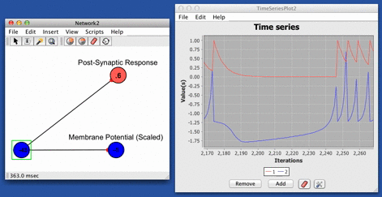

Jump and Decay
This response function produces an instantaneous jump in the post synaptic response equal to the, jump height, followed by an exponential decay back to a base-line response at a rate which is proportional to the decay constant, decay rate.
$$\large PSR(t)_{ij} = Jw_{ij}e ^ \left({\Delta_t} / {\tau} \right) + b $$
Where $PSR(t)_{ij}$ is the post-synaptic response of the synapse connecting neuron $j$ to $i$, $w_{ij}$ is the absolute efficacy or "weight/strength" of the synapse connecting neuron $j$ to neuron $i$, $J$ is the jump height, $\Delta_t$ is the difference between time of the last spike at neuron $j$ ($t_0$) and the current time ($t_0 - t$), $\tau$ is the decay time constant, and $b$ is the baseline value that $PSR_{ij}$ will decay to as $e^\left(\Delta_t / \tau \right) \rightarrow 0$.